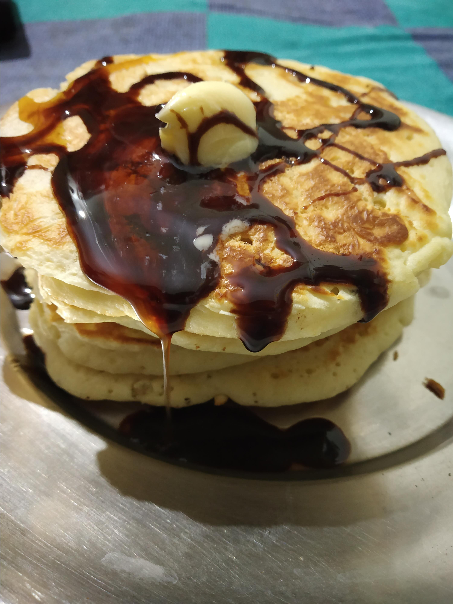

Good old fashioned pancakes

Good_old_fashioned_pancakes are a favorite dish for all americans who dont like Waffles.
Ingredients
- ½ cups all-purpose flour
- ½ teaspoons baking powder
- ¼ teaspoon salt, or more to taste
- tablespoon white sugar
- ¼ cups milk
- egg
- tablespoons butter, melted
Steps
- thro all ingredients into bowl
- shash with hammer
- blowtorch until burnt and hope to god you have leftovers